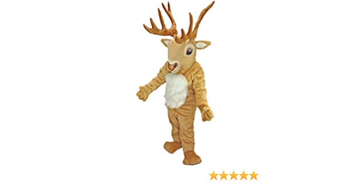

KANSAS KITE
Kite is mascot of kansas city basket ball team. Kite represents sambar deer which will be in white and black color. Kite is an mascot created by Sreeja Kumbhum.
Below are some of the fun facts about mascot sambardeer.
\Sambardeers is the large deer evolved species.
A Sambardeer’s known as largest oriental deer with some adult males.
Sambar deer originate from southern part of Asia continent.
Sambar are adapted to walk long distances.

Link for index